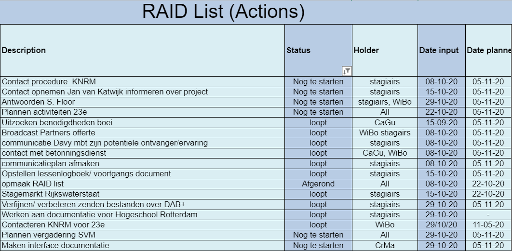

Intership Documentation
| Home Page
| Internship Goals
The learning goals for this internship can be found here.
On the 31 augustus 2020, I started my third-year internship at Rijkswaterstaat. Rijkswaterstaat is a branch of the
Dutch government which is responsible for the maintanance of waterways, seas and roads.
Intro | The internship assignment I applied for concerns the way data is distributed on the North
Sea. Right now, there is no reliable and covering network on this body of water, and Rijkswaterstaat wants to jump
into this gap, as there is no financial insentive for a company to fix this problem.
The goal of this assignment is rather simple: Improve the situational awareness of ships on the North sea. This
requires data to be send too these ships, and that is where DAB+ comes in. A first step in this government project
is transferring data and files with a DAB+ network. This technology was chosen because it has already seen
widespread use since 1995, and is relatively affordable in contrast with for instance, satellite communications or a
5G network.
Use-cases | To test if DAB+ is a good choice for the transport of data on the North sea, a few
use-cases have been formed. This was done before the internship even started. As the assignment is done with two
other students, we each chose a use-case to start researching and implementing. I chose to start working on remote
chart updates. Every ship in a certain weight class has to have an ECDIS on board, and many smaller ships use one,
or a free version, for their navigation. You can compare an ECDIS to a TomTom in a car.
Most of these systems use a modified version of ENC charts, so these need to be transported via DAB+. This is where
Chris Markus comes in, who is one of the two other students working on this assignment. He is responsible for
transporting data reliably via DAB+.
Sending | The transmitting of a DAB+ channel is illegal, so to send data the project will be using
a commercial DAB+ company, with a ready-to-use network. The receiver of this data will be build by the students
themselves, both hard-and software.
From here, the proof and progress of the project will be documented.
In the first few weeks of the project, we set up the contacts we needed for the project, did research about existing
solutions for distributing data over DAB+. We chose the hardware we need to start the project, and met with
Rijkswaterstaat employees and Broadcast partners.
Contacts |
The project itself requires colaboration with a few external groups and companies, these include the KNRM, broadcast
partners and shiptron. They each have a distinct role to play in the project.
The Royal Netherlands Sea Rescue Institution will work with us to test our project on the North Sea with their
ships. The details will be talked about with them during the project.
Broadcast Partners is a company that specialises in FM and DAB+ radio transmission. They will work with testing our
receivers, and in future projects, might be responsible for a network of DAB+ transmitters for transmission on the
North Sea.
Shiptron is our hardware supplier for the project. They will deliver products to us, at home due to Corona, and give
us advice on what products to purchase.
Hardware |
The hardware we need to test our receiver was decided in about a week, after we talked to our advisor and the
suppliers over at shiptron. We decided to each get a Nooelec NESDR Smart . They are cheap, have good
documentation and work very well for how tiny they are. With this receiver, ANTENNA.
We also decided to get a HackRF one. This piece
of hardware can be used to be a receiver as well as a sender. This is a simple device to check if our software
actually works before being able to send with Broadcast Partners.
To make a receiver that is able to be placed on a ship, or another object on the ocean, we decided to buy some Raspberri pi
with a decent case. This will be the base hardware for our receiver at sea.
Basis of the project |
The only project that has worked with data over DAB+ before ours that we could find, is data over dab, which is a thesis by swiss
students who designed programs to send and receive arbitrary data over DAB. We plan to use their work to advance our
own project. This project however, has not been updated for years, and needs to be fixed.
We could've also chosen to build our own software from scratch, but learning the DAB+ protocol takes a long time, as
we heard from people online, aswell as from our partners.
Manage & control |
- During my internship, I want to actively work with a projectmanagement methodology.
At the start of the project we where informed that the norm at Rijkswaterstaat is to use the Prince2 project
management strategy. We decided to do this since it was recommended to us. During our project, we created a detailed
project initialisation document !!!LINK!!!, a project plan, and during the project we used a Raid list to keep everyone informed.

- I want to be able to perform extensive tests after designing a solution, if possible in practice.
To test our work-in-progress solutions at home, we bought a HackRF one and a Nooelec NESDR Smart to respectively send and
receive data with our developed software.
Analyse |
- I want to get to know a system or technology during my internship in order to be able to make the best choices
about improvements / adjustments.
PROOF
- During my internship I want to thoroughly research the information sources ashore in order to make good
choices later.
PROOF
Advise |
- During my internship I want to make informed decisions on hardware and software to use.
During the selection of our hardware, we discussed with a few groups to make an informed decision. Obviously we
looked in documentation and on the internet for good products first. We got recommendations from our technical
advisor and technical supplier.
Design |
- During my internship I want to take into account existing software and hardware solutions that are already
active in the field of my assignment.
During my internship I talked to alot of people that are activily working on DAB+ solutions. Since the concept of
data over dab is reletively unknown, the only project that worked on this concept was Data over
DAB. This thesis is older, and took a lot of efford to fix. We got in contact with the original supervisor
and students that worked on it to ask certain questions about performance and possibilities with this software.
- During my internship I want to test my solution against the predetermined specifications, using a test
plan.
PROOF
Realise |
- During the realization of my internship, I want to learn more about the programming language of the project
(Java, C++).
During my internship I worked with C++ aswell as Java. In java we made our own programs, and in C++ we mostly edited
existing solutions and changed the build environment.
- During my internship I want to learn how the DAB+ data, when it arrives on the ship, can be used for the
computers on board.
PROOF